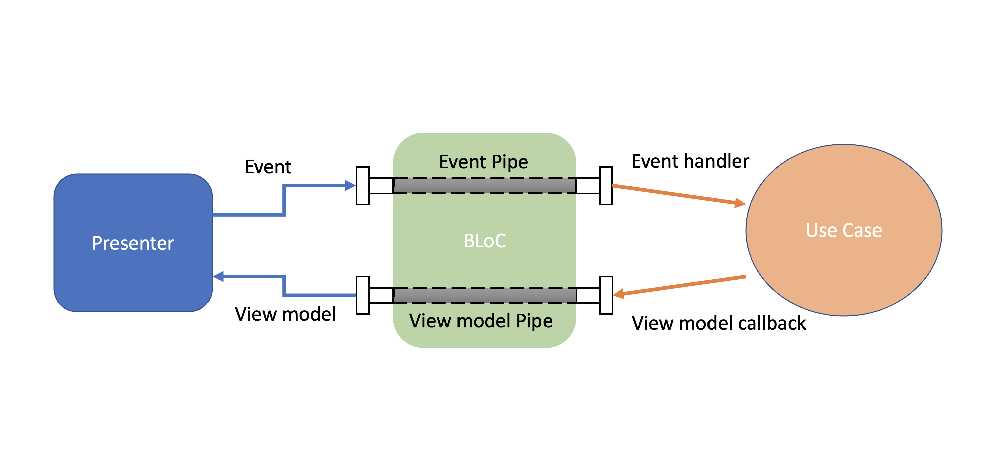

- Presenter: Creates Screen based on
BuildContext,BLoC, andViewModel, and supports screen action. - BLoC: The Bloc component, manage state across the app and routes data/state to other parts of the Framework.
Presenter extents Presenter< Bloc, ViewModel, Screen> to create the Screen, and also manages all user actions on screen.
class ExamplePresenter extends Presenter<ExampleBloc, ExampleViewModel, ExampleScreen> {
@override
Stream<ExampleViewModel> getViewModelStream (ExampleBloc bloc) {...
@override
Widget buildLoadingScreen(BuildContext context) {...
@override
Widget buildErrorScreen(BuildContext context, Object? error) {...
@override
ExampleScreen buildScreen(BuildContext context, ExampleBloc bloc, ExampleViewModel viewModel) {...
}
getViewModelStreammethod provideViewModelby listening toBLoclistener.buildLoadingScreenmethod return aWidgetto create the loading screen.buildErrorScreenmethod return aWidgetto create the error screen.buildScreenmethod return aScreento create the UI by passing the associatedViewModeland the action functions.
@override
ExampleScreen buildScreen(BuildContext context,
ExampleBloc bloc, ExampleViewModel viewModel) {
return ExampleScreen(
viewModel: viewModel,
pressenterActions: ExamplePressenterActions(),
);
}
 |
 |
- Business Logic Component
BLoC, is like an application traffic manager that connectsUsecaseandScreenvia pipes
class ExampleBloc extends Bloc {
ExampleUseCase? _exampleUseCase;
final exampleViewModelPipe = Pipe<ExampleViewModel>();
final exampleEventPipe = Pipe<ExampleEvent>(canSendDuplicateData: true);
@override
void dispose() {
exampleViewModelPipe.dispose();
exampleEventPipe.dispose();
}
ExampleBloc({ExampleUseCase? exampleUseCase}) {
_exampleUseCase = exampleUseCase ?? ExampleUseCase(exampleEventPipe.send);
exampleViewModelPipe.whenListenedDo(() => _exampleUseCase!.execute());
exampleEventPipe.receive.listen(exampleEventPipeHandler);
}
void exampleEventPipeHandler(ExampleEvent event) {}
}
 Presenter and Bloc are connecting the domain layer and presentation layer, to serve Screen data/state with logic that process in Usecase.
Presenter and Bloc are connecting the domain layer and presentation layer, to serve Screen data/state with logic that process in Usecase.

- Presenter access to the stream of
ViewModelthrough listening toViewModelpipes and provide that to screen, or send screen event to domain layer through calling event pipe provided byBloC. BloCListen to events/data from presenter via pipes and invoke the use case by specific business logic. Receive updatedViewModelfromUseCasevia callback, and send theViewModelto the presenter via the ViewModel pipe.